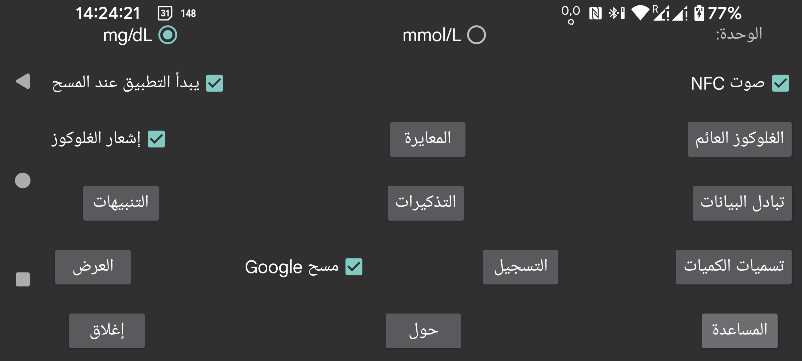

ar be de es fr it nl pl pt ru tr uk zh en
اختر ما إذا كانت قيم الغلوكوز ستُعرض بوحدة mmol/L أم mg/dL.
يشغّل صوتًا أثناء المسح بالإضافة إلى الاهتزاز.
إذا كان هذا الخيار محددًا، فسيبدأ هذا التطبيق عند مسح المستشعر عبر NFC حتى لو لم يكن التطبيق ظاهرًا على الشاشة. وإذا كان لدى عدة تطبيقات هذا الإعداد، فسيعرض Android نافذة اختيار لتحديد التطبيق الذي تريد استخدامه. ويبدو أن اختيار تطبيق معيّن لا يعمل جيدًا، كما أن تعيينه ليُختار تلقائيًا في المرة التالية لا يعمل أيضًا. لذلك في هذه الحالة لا يمكنك المسح من دون وجود أحد التطبيقات في المقدمة. إيقاف هذا الخيار في هذا التطبيق قد يجعل من الممكن تشغيل تطبيق آخر بهذه الطريقة.
إذا كان لديك وصول root، فيمكنك أيضًا تعطيل تشغيل تطبيق Librelink من Abbott عبر NFC (لا يعمل مع Libre 3):
افتح adb shell أو termux بصلاحيات root، ثم اكتب:
pm disable com.freestylelibre.app.nl/com.librelink.app.ui.common.NFCScanActivity
في Librelink 2.7.1 وما دونه كان يجب استخدام:
pm disable com.freestylelibre.app.nl/com.librelink.app.ui.common.ScanSensorActivity
الحزمة com.freestylelibre.app.nl هنا هي النسخة الهولندية من Librelink، ويجب استبدالها بالنسخة التي تستخدمها أنت. ويمكنك معرفة اسم الحزمة بكتابة الأمر التالي، حتى من دون root:
pm list package freestylelibre
بعد ذلك سيظل بإمكانك استخدام Librelink للمسح عندما يكون في المقدمة، لكنه لن يبدأ تلقائيًا خلاف ذلك. تتسبب إصدارات Librelink 2.5.2 وما بعدها في إغلاق نفسها إذا اكتشفت root. لكن في Magisk يمكنك بسهولة إخفاء root بإعادة تسمية Magisk وإضافة التطبيقات المطلوبة إلى denylist (Magisk 24.3) أو Magiskhide (Magisk 23.0). ويُفضَّل أيضًا إضافة Juggluco إلى denylist. وباستثناء استخدام مستشعرات US Freestyle Libre 2، يمكنك أيضًا استخدام إصدار أقدم من Librelink لا يحتوي على فحص root.
ومن دون root، يمكنك من adb shell أيضًا تعطيل التطبيق بالكامل:
pm disable-user --user 0 com.freestylelibre.app.nl
وقبل الاتصال بخدمة عملاء Abbott، يمكنك إعادة تفعيله عبر:
pm enable com.freestylelibre.app.nl
(كان اسمه سابقًا "Glucose in android status bar"). عند تفعيله، تُعرض قيم الغلوكوز الواردة عبر البلوتوث بهدوء في إشعار وفي شريط حالة Android. وإذا أوقفته، فبدلًا من رقم ستظهر نقطة، ولن يعرض الإشعار إلا نصًا مثل "للاتصال بالمستشعر" أو "لتبادل البيانات". يفرض Android على التطبيقات التي تبقى عاملة في الخلفية أن يكون لها إشعار مرئي من هذا النوع، وإلا قد يوقفها بسهولة. ولا يوقف Juggluco هذا الإشعار إلا عندما يكون خيار "المستشعر عبر البلوتوث" معطّلًا ولا توجد اتصالات Mirror.
في بعض الهواتف الذكية لا تظهر قيمة الغلوكوز في شريط الحالة إلا بعد تغيير إعدادات إشعارات Android. في Realme GT 5G مثلًا يجب الذهاب إلى قائمة التطبيقات->Juggluco->إدارة الإشعارات، ثم الضغط على glucoseNotification وإيقاف "Set to Silent". عندها سيظهر خيار "Display in status bar" مفعّلًا.
يمكنك أيضًا الحصول على إشعار Android باختيار Notify من القائمة الوسطى اليسرى. في هذه الحالة قد يُرسل الإشعار إلى بعض الساعات الذكية إذا كانت مهيأة لذلك. هذا يعمل مع ساعات Garmin، ولا أعلم إن كان يعمل مع غيرها. كما أن التنبيهات تنشئ إشعارات أيضًا.
عند تشغيل هذا الخيار، تظهر صورة صغيرة تحتوي على قيمة الغلوكوز الحالية باستمرار فوق الشاشة بغض النظر عن التطبيق الموجود في المقدمة. وعند تشغيله للمرة الأولى سيحوّلك النظام إلى قائمة تطبيقات يجب فيها منح Juggluco إذن الظهور فوق التطبيقات الأخرى.
اضبط تنبيهات ارتفاع الغلوكوز وانخفاضه، وتنبيه فقدان الإشارة، وإشعار توفر قيمة جديدة.
حدّد التسميات المستخدمة للكميات. ينقلك هذا إلى شاشة تختار فيها التسميات التي تريد استخدامها عند إدخال الكميات، مثل جرعات الإنسولين، واستهلاك الكربوهيدرات، وعدد الساعات التي قضيتها في لعب كرة القدم. وإذا كنت تستخدم أيضًا تطبيق ساعة Garmin المسمى Kerfstok، فستُرسَل هذه التسميات إلى تطبيق الساعة.
طرق مختلفة لإرسال البيانات من Juggluco إلى تطبيقات أو خوادم أخرى. (أما إرسال البيانات إلى الساعات فاذهب إلى القائمة اليسرى->الساعة).
حدّد أن يعمل تنبيه إذا لم تُدخل كمية معيّنة من الطعام أو الدواء خلال فترة زمنية محددة.
امسح مصفوفة البيانات الموجودة على عبوات مستشعرات Sibionics وعلى أدوات إدخال Dexcom G7/ONE+، وكذلك رمز QR الموجود في القائمة الوسطى اليسرى→Mirror، باستخدام ماسح الرموز من Google. وإذا ألغيت تحديد هذا الخيار، فسيُستخدم zXing. في معظم الأجهزة يعمل مسح Google بشكل أفضل، لكنه أحيانًا لا يعمل. وإذا فشل مع ظهور خطأ، فسيُستخدم zXing دائمًا، لكن في بعض الأحيان لا يعمل Google scan من دون أن يعرض أي خطأ.
كل أنواع الإعدادات المتعلقة بكيفية عرض البيانات، من النطاق المستهدف إلى اللغة.